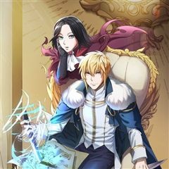
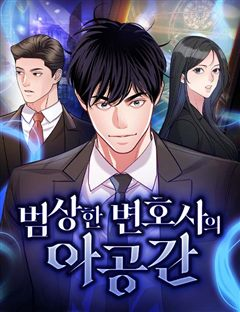
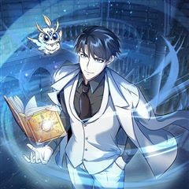

드라마 사이다·참교육 웹툰 추천 TOP 30
드라마 작품 중에서 사이다, 참교육, 인생역전, 다크히어로 같은 요소가 들어간 작품만 골랐어요. 네이버웹툰·카카오웹툰·레진코믹스에서 조건에 맞는 작품 52개 중 인기 순으로 30개를 골랐어요. 인기 TOP 3: 외모지상주의, 무지개다리 파수꾼, 퀘스트지상주의
2026-10-05 기준 · 성인 작품 제외
내 취향으로 더 좁혀서 추천받기 →-
1
 네이버웹툰
네이버웹툰외모지상주의
못생기고 뚱뚱하다고 괴롭힘을 당하며 루저 인생만 살아온 내가 잘생겨졌다는 이유로 인싸가 됐다. 어느 날 자고 일어났더니 갑자기 완벽한 외모와 몸을 지닌 사람이 되어 깨어난다면?
드라마사이다참교육학원액션소년물네이버웹툰에서 보기 → -
2
 카카오웹툰
카카오웹툰무지개다리 파수꾼
돈과 성공만을 전부로 알던 유명 수의사 이한철. 그는 어느 날 사고 이후, 동물들의 목소리를 들을 수 있게 된다. 그렇게 동물 병원을 찾은 여러 동물들의 이야기를 듣던 어느 날, 길에서 만난 강아지 밍구의 살려달라는 목소리를 듣게 되는데.. 동물의 목소리를 듣는 수의사 이한철, 동물을…
드라마사이다눈물샘자극카카오웹툰에서 보기 → -
3
 네이버웹툰
네이버웹툰퀘스트지상주의
[외모지상주의], [싸움독학], [인생존망]과 세계관을 공유하는 작품! 공부, 싸움, 외모. 뭐 하나 잘난 것 없는 평범한 고등학생 ‘김수현’의 눈앞에 갑자기 퀘스트창이 나타났다! 첫 번째 퀘스트, [엄마한테 사과하기]를 완료한 수현은 보상으로 키가 3cm 커지게 되는데! 퀘스트 엄청…
드라마사이다참교육인생역전집착녀네이버웹툰에서 보기 → -
4
 카카오웹툰
카카오웹툰더 챌린저
'루저', '약자', '땅바닥'. 모두 현실에서 나를 부르는 호칭들이다. 하지만 그건 전부 '현실'에서의 이야기일 뿐. 가상현실 게임에서조차 '루저'라는 법은 없잖아? 게임 속에서 나는 최고가 된다! '루저' 박노아의 프로게이머 도전기. <THE CHALLENGER>
드라마사이다성장물카카오웹툰에서 보기 → -
5
 네이버웹툰
네이버웹툰상남자
오로지 성공만을 바라보며 기업 정점의 자리까지 오른, 최고의 샐러리맨 한유현. 대가로 사랑하던 모든 이를 잃어버린 후, 후회 섞인 인생을 돌아보는데... 어느 날 모든 기억을 안은 채, 젊은 시절의 그때로 돌아가게 된다. 모든 것의 시작점인 신입사원의 위치에서, 그가 다시 삶을 설계한…
드라마사이다인생역전오피스청춘네이버웹툰에서 보기 → -
6
 카카오웹툰
카카오웹툰블랙기업조선
밀리터리, 스팀펑크 등등 온갖 덕질에 미친 잡덕후가 환생했다. 그런데 아버지가 세종대왕? 덕질에 능한 군주와 덕질에 미친 아들, 그리고 갈려 나가는 대신들과 수많은 인간들. 오늘도 조선의 밤은 야근의 불빛이 가득하다.
드라마사이다정치카카오웹툰에서 보기 → -
7
 카카오웹툰
카카오웹툰2레벨로 회귀한 무신
[무가치한 인류를 삭제합니다] 게임인 줄로만 알았던 '배틀넷'이 인류에게 재앙을 불러왔다. 온 우주의 생물들이 목숨을 걸고 경쟁하는 '스페이스 리그'가 개최 후 지구의 대표 인류는 패배를 반복하면서 결국 인류는 종말을 맞이했다 단 한 사람만 빼곤 '무성' 성지한. 그의 스킬 '무명신공…
드라마사이다게임판타지카카오웹툰에서 보기 → -
8
 네이버웹툰
네이버웹툰나를 바꿔줘
수상한 생명보험에 드는 조건으로, 하루 아침에 내가 원하는 외모로 살 수 있게 된다면? 인생을 바꾸기 위해 얼굴을 훔치다!
드라마참교육고자극드라마자극적인사회고발네이버웹툰에서 보기 → -
9
 네이버웹툰
네이버웹툰A.I. 닥터
태화 그룹이 미래를 걸고 개발한 진단 목적 A.I. 바루다! 내과 레지던트 1년 차 이수혁은 바루다를 견학하던 중 원인 모를 폭발에 휘말려 정신을 잃고 만다. 그리고 다시 정신을 차렸을 때 그는 자신의 머릿속에 존재하는 A.I. 바루다를 마주한다. 이미 절대 떨어질 수 없는 사이가 되…
드라마사이다현대판타지현대직업드라마네이버웹툰에서 보기 → -
10
 카카오웹툰
카카오웹툰회귀자 사용설명서
어느 날, 이 세계에 소환된 이기영. 정체를 알 수 없는 공간에 사람들과 함께 감금당했다. 우왕좌왕한 순간 들려오는 섬찟한 경고. "살아남기 위해서, 당신의 재능과 특성을 이용하십시오." 재능? 특성? 자신의 재능 창을 열어 능력을 확인하는데… [플레이어의 재능 수치는 최하입니다.]…
드라마사이다회귀카카오웹툰에서 보기 → -
11
 카카오웹툰
카카오웹툰회귀 경찰의 리셋 라이프
악바리로 소문난 지능범죄수사대의 팀장 최종혁. 정/재계를 아우르고 있는 거대한 범죄조직의 존재를 깨달은 그는 온갖 압력에도 굴복하지 않고 꿋꿋이 그 뒤를 추적한다. 그러던 와중, 갑작스레 들려온 어머니의 부고를 듣고 정신없이 병원으로 가다 그만 의문의 사고를 당하고 마는데... “경찰…
드라마사이다성장물카카오웹툰에서 보기 → -
12
 네이버웹툰
네이버웹툰계속 써도 돈이 쌓임
청년 실업 100만 시대, 스펙 제로 백수 정진호. "너, 내 회사로 와라." 같은 게임의 길드 마스터였던 증권사 대표의 제안으로 얼떨결에 사회로 뛰어들게 된다! 그리고 그곳에서 발현된 정진호의 특별한 능력. 마우스 '딸깍' 한 번에 억 단위가 움직인다. 증권가의 돈을 싹쓸이하는 미친…
드라마인생역전주식현대판타지오피스네이버웹툰에서 보기 → -
13
 카카오웹툰
카카오웹툰이 집안을 일으켜세우겠습니다!
키 183, 몸무게 75 3대 500을 치던 완벽한 내 몸은 어디 가고 이딴 짜리몽땅 삼등신이 되다니! 세계적인 기업이자 삼전 그룹의 왕이었던 나, 전성국. 갑작스러운 심장 마비로 죽어버렸다. 생애 최고의 날에 쓰러진 것도 모자라 가난한 집구석의 아기가 되어버렸다고!!! 게다가 집은…
드라마사이다성장물카카오웹툰에서 보기 → -
14
 네이버웹툰
네이버웹툰긁지 않은 복권
얼굴은 존예지만 뚱뚱한 은지는 긁지 않은 복권의 정석이라고 불린다. 남들보다 많은 양을 먹는 점을 이용해 먹방 유튜버가 되었지만, 뚱뚱한 체형 때문에 조롱 당하기 일쑤다. 저조한 조회수, 늘지 않는 구독자에 희망을 잃어가는 은지. 그러던 어느 날 우연히 주운 s복권을 긁은 뒤 하루아침…
드라마인생역전고자극드라마자극적인환골탈태네이버웹툰에서 보기 → -
15
 카카오웹툰
카카오웹툰변경백 서자는 황제였다
바리엘 제국의 마법사이자 어린 나이에 황제가 된 이안은 조카의 반란으로 감옥에 갇힌다. 이안을 구해주러 온 마법사 나움은 금지된 시공간 마법을 사용한다. 금지된 마법은 황제 이안을 과거 100년으로 이끌고 100년 전 멸문한 변경백 가문의 서자 이안에게 빙의한다. 서자 이안은 접경지인…
드라마사이다서스펜스환생카카오웹툰에서 보기 → -
16
 카카오웹툰
카카오웹툰계약하시겠습니까?
대한민국 최고의 부동산 투자 회사의 이사였던 윤석에서. 은둔형 외톨이이자 돼지인 김동규로. 좌절도 잠시, 복수를 발판 삼아 다시 일어났다. 기다려. 나를 죽인 대가를 톡톡히 치르게 해줄 테니까. 오늘도 난 윤석으로서 계획하고, 김동규로서 실행에 옮긴다.
드라마사이다개그복수극카카오웹툰에서 보기 → -
17
 카카오웹툰
카카오웹툰운빨
내 삶에서 그렇게 터지지 않던 운빨이 게임을 접기 직전, 단 한 방에 터졌다! 세계 최초 가상현실 게임 <서킷>에서 인생 역전하려던 이기호, 4억 명의 플레이어 중 그 누구도 손에 넣지 못한 레어 아이템이 그의 손에 들어왔다! “이런 게 진짜 인생역전 아니냐!”
드라마사이다미스터리게임판타지카카오웹툰에서 보기 → -
18
 카카오웹툰
카카오웹툰검신급 공무원의 회귀
인류 최고의 검사이자 대한헌터협회 소속 공무원 헌터, 안수호. 게이트의 종식을 위해 공직자가 된 그는 최후의 게이트라 불리는 재앙급 게이트들 중에 하나가 공략되었을 때 동료들에게 배신당하고 말았다. 동료들이 그를 배신한 이유? 게이트가 종식되면 그들의 권력이 사라지기 때문. 이렇게 끝…
드라마사이다회귀카카오웹툰에서 보기 → -
19
 네이버웹툰
네이버웹툰재벌의 품격
1990년대 대한민국을 대표했던 재경 그룹 회장 손중길. 눈을 감고 30년 뒤, 2022년 손자 손정훈의 몸으로 눈을 뜬다. 30년 전과 비교해 눈에 띄게 쇠퇴한 재경 그룹. 손중길은 자신이 일궈 낸 그룹을 다시금 정상에 올리려 한다.
드라마사이다현대오피스고인물네이버웹툰에서 보기 → -
20
 네이버웹툰
네이버웹툰보이스피싱인데 인생역전
"당신에게 미래를 팝니다!" 5년 전 조직적인 음해로 한 순간에 몰락한 국민배우 강주혁. 고통스럽게 지내던 그에게 어느날 의문의 전화 한 통이 걸려온다. 바로 미래를 예언해 주는 보이스피싱! 연예계 재기와 복수를 위한 위험한 거래가 시작된다.
드라마참교육인생역전하이퍼리얼리즘연예계네이버웹툰에서 보기 → -
21
 카카오웹툰
카카오웹툰용사파티 대마법사의 환생
천재마법사 린은 13살 때, 세상을 혼돈에 빠뜨리려는 거악 ‘심연’을 물리치고자 리스타를 위시한 용사파티와 함께 여행을 떠난다. 하지만 싸움은 점점 격렬해지고 마지막 순간에 린의 몸은 ‘심연’의 암독에 당해서 생명이 위태로워진다. “다시 돌아올게”라는 말을 남기고 강제 휴면 상태에 빠…
드라마사이다환생카카오웹툰에서 보기 → -
22
 카카오웹툰
카카오웹툰외과 의사가 된 화타
“허망하기가 그지없다.” 신의神醫라 불릴 정도의 의술을 지닌 화부는 조조의 저주 아닌 저주에 옥에서 숨을 거두는데... ‘아직 죽지 않은 건가?’ 지독한 통증에 눈을 뜨니 보이는 것은... 처음 보는 낯선 물건과 글자들! “이, 이게 어떻게 된 일이지? 내, 내가 설마 다른 세계 의원…
드라마사이다성장물빙의카카오웹툰에서 보기 → -
23카카오웹툰
망할 운명의 걸그룹 리더가 되었습니다
데뷔 10년 차, 3년 연속 대상 수상. 비주얼, 실력, 인성, 모든 게 완벽한 여자 솔로 아이돌 백녹하. 팬덤이면 팬덤, 대중성이면 대중성. 무엇 하나 놓치지 않은 채 호감도와 인지도의 정점을 찍은 순간- “…이 관리 안 된 성대 뭐야?” 10년 전으로 돌아왔다! 그것도 내 몸이 아…
드라마사이다성장물카카오웹툰에서 보기 → -
24
 카카오웹툰
카카오웹툰따봉으로 레벨업
내 이름은 엄 지척(志剔). 대한민국 평범한 헌터 보조원. 몬스터 사체를 처리하며 근근이 살아가고 있다. 그런 어느 날, 돌아가신 할아버지가 꿈에 나타난 이후, '따봉을 받고, 각성해 버렸다.' 할아버지, 이래서 손자 이름을 이렇게 지으신 건가요? 따봉이 포인트가 된다! 따봉을 모아…
드라마사이다힐링게임판타지카카오웹툰에서 보기 → -
25

카카오웹툰갑질하는 영주님
외계인의 침공으로 황폐화된 지구, 민병대를 이끌던 ‘박현성’은 처절한 항전 끝에 외계인을 위기로 몰아넣는데 성공한다. 워프로 도망가는 외계인과 함께 산화하려는 마지막 순간. 워프에 휘말려 정신을 잃고 만다. 눈을 뜨니 거울 속에 비치는 모습은 민병대장 ‘박현성’이 아닌 알베른의 어리고…
드라마사이다환생카카오웹툰에서 보기 → -
26
 네이버웹툰
네이버웹툰월스트리트 천재의 시한부 투자법
월스트리트에서 수천억 원의 자산을 일군 천재 투자자 ‘하시헌’ 하지만 돈으로도 치료할 수 없는 희귀병에 걸려 죽음을 맞이하던 순간, 10년 전 월스트리트 신입사원 시절로 회귀한다. 자신의 병을 치료할 신약을 개발하려면 천문학적인 돈이 필요하다는 사실을 깨달은 시헌, 그는 생존을 위해…
드라마사이다인생역전주식현대판타지네이버웹툰에서 보기 → -
27

네이버웹툰범상한 변호사의 아공간
변호사 한범상 앞에 나타난 이상한 문. 그 너머에는 시간이 흐르지 않는 공간이 존재한다.
드라마사이다법정드라마직업드라마소설원작네이버웹툰에서 보기 → -
28

카카오웹툰나만 아는 주인공들
“만약 내게 다시 한번 더 기회가 주어진다면…” 지구의 종말이 시작되고 10년, 죽음을 눈앞에 두고 생을 후회하던 유현의 머리 위로 강렬한 빛이 내려온다. 그러다 눈을 떴을 땐 낯선 풍경이 펼쳐져 있는데... 인간이 아닌 이종족 ‘텔러’로 환생한 것도 모자라, 10년 전으로 회귀까지…
드라마사이다회귀카카오웹툰에서 보기 → -
29
 카카오웹툰
카카오웹툰미래 USB로 인생역전!
훈훈한 외모 말고는 딱히... 학력도, 강의력도 내세울 게 없는 국어 강사, 김준영. 한 노인을 만나게 된 뒤 모든 게 뒤바뀐다. 전국 중,고등학교의 전과목 수행평가, 중간, 기말고사는 물론 수능까지. 미래의 모든 기출이 담긴 USB를 손에 넣다.
드라마사이다힐링성장물카카오웹툰에서 보기 → -
30
 네이버웹툰
네이버웹툰차라리 빌런으로 살겠다
대영 물산의 스페인팀 대리였던 주인공은 상사들에게 성과를 갈취당한 후 유통으로 밀려나면서 대영 그룹 유일 적통인 강문정 상무의 수행 비서 일을 시작하게 된다. 자신의 자리를 위협받고 있던 강문정 상무는 세간의 이목을 다시금 그녀에게 집중시키기 위해 3년 간 그녀를 곁에서 수행해왔던 주…
드라마사이다오피스오피스로맨스두뇌싸움네이버웹툰에서 보기 →